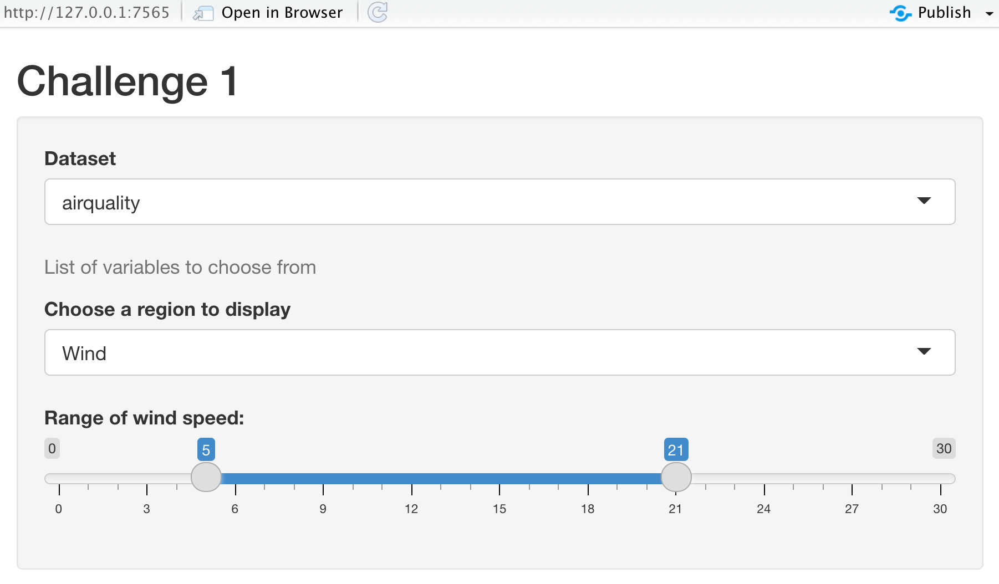

Chapter 3 Structure of a Shiny App
A basic Shiny app consists of two objects:
UI object - contains the code for the UI (user interface) elements i.e the visible part of the app; takes input and displays output.
server object - contains the code for all the calculations the app will need. It contains the logical part of the code and access input from UI, performs the computation and generates an output which is returned to the UI.

The skeleton of every Shiny app looks like:
library(shiny)
ui <- fluidPage(
# front end interface
)
server <- function(input, output, session) {
# back end logic
}
shinyApp(ui, server) # runs the app3.1 UI
This is the front-end of the shiny app that allows you to capture (input) and display (output) a variety of data types. Fundamentally the UI is an HTML document with shiny functions returning chunks of HTML code. Fortunately, we don’t have to write the HTML code directly ourselves, Shiny has R functions that do that instead.
The UI object controls the layout and appearance of the app. The UI makes use of widgets to interact with data. Here, we’ll look at examples of shinyWidgets that insert input controls.
library(shiny)
sliderInput("slider1",
label = h4("This code will make a slider \n"),
min = 0, max = 100, value = 50)renderPrint({paste("The number selected by the slider is:", input$slider1)})fluidPage(
# Copy the chunk below to make a group of checkboxes
checkboxGroupInput("checkGroup", label = h3("Checkbox group"),
choices = list("Choice 1" = 1, "Choice 2" = 2, "Choice 3" = 3),
selected = 1),
hr(),
fluidRow(column(3, verbatimTextOutput("value")))
)The shiny gallery has a section for application layouts. This is a useful of resource for ideas on how to structure the appearance of your app.
To see what widgets are available, look at the Shiny widget gallery. or consult the Shiny cheatsheet.
3.2 Layout
The complexity of your application may have an impact on the complexity of your layout. For instance, an application that contains only one or two widgets and one or two outputs may only need one page to fit all these elements. If however there are lot of controls and results to display it might be easier to organize these under tabs or a navbar.
A layout with three panels: a title panel, a sidebar panel and a main panel.
ui <- fluidPage( # fluidPage - this function creates a display that auto adjusts to the browser window
# further elements set to define the appearance will be placed within fluidPage
titlePanel("this is a title panel"),
sidebarLayout( # this function creates a layout with two pane21ls, one panel takes about a third of the screen width, the other panel takes about two thirds of the screen width.
# the position of the sidebar can be moved by providing the `position = "right" argument to the sidebarLayout function
sidebarPanel("this is the sidebar panel"),
mainPanel("this is the main panel")
)
)Building a UI involves nesting a lot of components inside each other. From this example here we can see that sidebarPanel and mainPanel are nested within sidebarLayout. sidebarLayout itself is also nested within fluidPage. As more components are added to the app, e.g widgets and outputs, they too will be nested within the panel functions to control their location on the layout.
The above layout is probably the most common layout used with shiny apps. It’s good for an app with only a few number of components. You may want to add navbar and tab sets if you have a large number of components.
ui <- fluidPage(
titlePanel("this is a title panel"),
sidebarLayout(
sidebarPanel("this is the sidebar panel"),
mainPanel(
tabsetPanel( # this function takes an argument of `position = "left"` (arguments can be "left", "right", "below". default is above)
# this argument directs where the tabs are positioned
tabPanel("plot results"),
tabPanel("table results"),
tabPanel("fun gifs")
)
)
)
)For more information about the application layout (including nav bars and lists), we recommend this resource. For more information about tab sets specifically, we recommend this article.
Another thing to note that a lot of the functions that build the UI are essentially wrapping HTML code within R functions. This means that the UI can also be customized by directly writing HTML code or by using wrapper tag functions. This is beyond the scope of this course but we thought it was worth mentioning.
3.3 Widgets
There is a wide variety of available pre-built widgets but all of them share a common basic framework. All widget input functions have the same first argument i.e. inputID. This is an identifier that connects the UI with the server. If for example inputID = select, you can access the input in the server as input$select. We’ll discuss more about the server in the next section.
The
inputIDis like a variable in R and must follow the naming convention. It must be a string that may contain only letters, numbers, and underscores.Like a variable, the
inputIDhas to be unique so it can be accessed inside the server.
Here are some more examples of Shiny widgets:
The choices augment takes a list. This list can either be unnamed or named. In the case of a named list, such as the one above for the checkboxGroupInput widget, the names will be displayed on the UI (e.g “Choice 1”) while the value (e.g 1) will be passed to the server side to be use1d for further computations. For an unnamed list, the value will both be displayed on the UI and passed to the server side.
3.4 Server
The server object contains the code for building the app. It contains the code for data processing, analysis and plotting. It takes input from the UI, runs (and re-runs) code chunks defined within, generates output and sends it to the UI.
The server logic follows reactive programming, which defines a graph of dependencies. The idea is that when the input changes, all related outputs are updated. This makes the Shiny App interactive.
In the Shiny skeleton code, server is defined as a function with three arguments- input, output and session. These arguments are created by Shiny when the session starts and cannot be changed.
library(shiny)
ui <- fluidPage(
# front end interface
)
server <- function(input, output, session) {
# back end logic
}
shinyApp(ui, server)3.4.1 Input
This is a list-like object that contains all input data from the UI. The input data can be accessed as input$inputId, where inputId is defined in the UI for any given widget. For example, if we refer back to the check-box example in shiny widgets, we specified the inputId as checkGroup. We can access the value of that specific input using input$checkGroup. It will contain the value 1 as we specified this in the selected argument. This value will be updated everytime a user selects a different check-box.
ui <- fluidPage(
# Copy the chunk below to make a group of checkboxes
checkboxGroupInput(inputId = "checkGroup",
label = h3("Checkbox group"),
choices = list("Choice 1" = 1,
"Choice 2" = 2,
"Choice 3" = 3),
selected = 1)
)3.4.2 Output
This is also a list-like object named according to the outputId arguments created in the UI. In the following example, the outputId for the textOutput is defined as greeting inside the UI. Inside the server function, the output is stored in the outputId using output$greeting (think of it as a storing a value inside a variable). Alternatively, think of it as a way to direct the results of a computation on the server side to a specific outputID.
The value of the greeting is Hello, World!
ui <- fluidPage(
textOutput(outputId = "greeting") # defines outputID
)
server <- function(input, output, session) {
output$greeting <- renderText("Hello, World!") # stores output in the outputID
}The render function sets up a special “reactive context” that automatically tracks the input values the output has used. It also converts the output of your R code into HTML to be display on a web page.
Challenge 1: Rewrite your ui to create a Shiny app that contains following:
Title that says “Challenge 1”
Select
airqualityfrom the default datasets in R (Hint: Refer toapp_ui.R).Create three widgets:
helpText()to write “List of variables to choose from”.selectInput()to list variables in theairqualitydataset.sliderInput()to add a slider where,min = 0;max = 30and selected values are:(5,21)
Try replacing the list options in selectInput by
colnames(airquality).
Your Shiny app should look like this:

Hint: Use the Shiny skeleton code to create a new R-script and edit the UI part:
library(shiny)
ui <- fluidPage(
# edit this part
)
server <- function(input, output, session) {
}
shinyApp(ui, server)